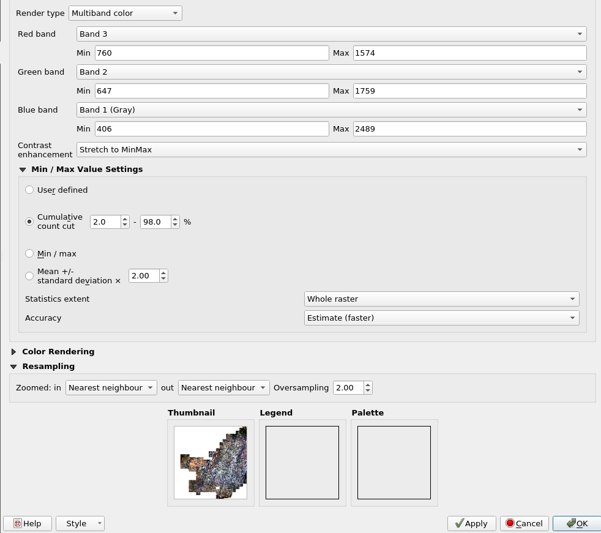

Dados Rasters
Os dados Rasters são imagens com informações geográficas e estão armazenados no sistema de arquivos do servidor. A configuração da pasta do local de armazenamento destes arquivos é feita no OWS Server na linha 54 do arquivo config.js, através da variável config['path_catalog']. Esta configuração deverá apresentar a pasta com o catálogo de dados a serem disponibilizados no OWS Server.
Estrutura de diretórios
Todos os dados geográficos Raster do projeto podem ser encontrados no link.
Após a descompactação do arquivo FIP_CERRADO.tar.gz os dados estão armazenados em diferentes subpastas. Considerando os dados catalogados na seção Dados Geográficos e o diretório configurado no config.js temos os seguintes dados em formato raster:
| Dado | Nome do arquivo | Subpasta |
|---|---|---|
| Susceptibilidade a Desmatamentos Grandes | bi_ce_susceptibilidade_desmatamento_maiores_100_na_lapig.tif bi_ce_susceptibilidade_desmatamento_maiores_100_na_lapig.tif.ovr |
/FIP |
| Susceptibilidade a Desmatamentos Pequenos | bi_ce_susceptibilidade_desmatamento_menores_100_na_lapig.tif bi_ce_susceptibilidade_desmatamento_menores_100_na_lapig.tif.ovr bi_ce_susceptibilidade_desmatamento_menores_100_na_lapig.tif.aux.xml |
/FIP |
| Altitude | bi_ce_srtm_altitude_30_2000_lapig.tif bi_ce_srtm_altitude_30_2000_lapig.tfw bi_ce_srtm_altitude_30_2000_lapig.tif.aux.xml bi_ce_srtm_altitude_30_2000_lapig.tif.vat.cpg bi_ce_srtm_altitude_30_2000_lapig.tif.vat.dbf bi_ce_srtm_altitude_30_2000_lapig.tif.xml |
/Relevo |
| Declividade | bi_ce_srtm_declividade_30_2000_lapig.tif bi_ce_srtm_declividade_30_2000_lapig.tfw bi_ce_srtm_declividade_30_2000_lapig.tif.aux.xml bi_ce_srtm_declividade_30_2000_lapig.tif.ovr bi_ce_srtm_declividade_30_2000_lapig.tif.xml |
/Relevo |
| Média da Precipitação Acumulada | bi_ce_precipitacao_historica_30_lapig.tif bi_ce_precipitacao_historica_30_lapig.tfw bi_ce_precipitacao_historica_30_lapig.tif.aux.xml bi_ce_precipitacao_historica_30_lapig.tif.vat.cpg bi_ce_precipitacao_historica_30_lapig.tif.vat.dbf bi_ce_precipitacao_historica_30_lapig.tif.xml |
/Água |
| Mosaico Landsat 2000-2019 | bi_ce_mosaico_landsat_completo_30_2000_fip.tif bi_ce_mosaico_landsat_completo_30_2000_fip.tif.aux.xml bi_ce_mosaico_landsat_completo_30_2000_fip.tif.ovr bi_ce_mosaico_landsat_completo_30_2002_fip.tif bi_ce_mosaico_landsat_completo_30_2002_fip.tif.aux.xml bi_ce_mosaico_landsat_completo_30_2004_fip.tif bi_ce_mosaico_landsat_completo_30_2004_fip.tif.aux.xml bi_ce_mosaico_landsat_completo_30_2006_fip.tif bi_ce_mosaico_landsat_completo_30_2006_fip.tif.aux.xml bi_ce_mosaico_landsat_completo_30_2008_fip.tif bi_ce_mosaico_landsat_completo_30_2008_fip.tif.aux.xml bi_ce_mosaico_landsat_completo_30_2010_fip.tif bi_ce_mosaico_landsat_completo_30_2010_fip.tif.aux.xml bi_ce_mosaico_landsat_completo_30_2012_fip.tif bi_ce_mosaico_landsat_completo_30_2012_fip.tif.aux.xml bi_ce_mosaico_landsat_completo_30_2012_fip.tif.ovr bi_ce_mosaico_landsat_completo_30_2013_fip.tif bi_ce_mosaico_landsat_completo_30_2013_fip.tif.aux.xml bi_ce_mosaico_landsat_completo_30_2014_fip.tif bi_ce_mosaico_landsat_completo_30_2014_fip.tif.aux.xml bi_ce_mosaico_landsat_completo_30_2015_fip.tif bi_ce_mosaico_landsat_completo_30_2015_fip.tif.aux.xml bi_ce_mosaico_landsat_completo_30_2016_fip.tif bi_ce_mosaico_landsat_completo_30_2016_fip.tif.aux.xml bi_ce_mosaico_landsat_completo_30_2017_fip.tif bi_ce_mosaico_landsat_completo_30_2017_fip.tif.aux.xml bi_ce_mosaico_landsat_completo_30_2018_fip.tif bi_ce_mosaico_landsat_completo_30_2018_fip.tif.aux.xml bi_ce_mosaico_landsat_completo_30_2019_fip.tif bi_ce_mosaico_landsat_completo_30_2019_fip.tif.aux.xml bi_ce_mosaico_landsat_completo_30_2019_fip.tif.ovr |
/img_satelites/bi_ce_mosaico_landsat_30_fip |
| Mosaico Sentinel 2016-2019 | bi_ce_mosaico_sentinel_10_2016_lapig.aux bi_ce_mosaico_sentinel_10_2016_lapig.axe bi_ce_mosaico_sentinel_10_2016_lapig.ovr bi_ce_mosaico_sentinel_10_2016_lapig.tfw bi_ce_mosaico_sentinel_10_2016_lapig.tif bi_ce_mosaico_sentinel_10_2016_lapig.tif.xml bi_ce_mosaico_sentinel_10_2016_lapig.xml bi_ce_mosaico_sentinel_10_2017_lapig.tfw bi_ce_mosaico_sentinel_10_2017_lapig.tif bi_ce_mosaico_sentinel_10_2017_lapig.tif.aux.xml bi_ce_mosaico_sentinel_10_2017_lapig.tif.ovr bi_ce_mosaico_sentinel_10_2017_lapig.tif.xml bi_ce_mosaico_sentinel_10_2018_lapig.tfw bi_ce_mosaico_sentinel_10_2018_lapig.tif bi_ce_mosaico_sentinel_10_2018_lapig.tif.aux.xml bi_ce_mosaico_sentinel_10_2018_lapig.tif.ovr bi_ce_mosaico_sentinel_10_2018_lapig.tif.xml bi_ce_mosaico_sentinel_10_2019_lapig.tfw bi_ce_mosaico_sentinel_10_2019_lapig.tif bi_ce_mosaico_sentinel_10_2019_lapig.tif.aux.xml bi_ce_mosaico_sentinel_10_2019_lapig.tif.ovr bi_ce_mosaico_sentinel_10_2019_lapig.tif.xml |
/img_satelites/bi_ce_mosaico_sentinel_10_lapig |
Processo de atualização
Mosaicos Landsat
Os mosaicos Landsat disponibilizados para visualização no Cerrado DPAT são os mesmos utilizados pelo INPE para inspeção visual e detecção das áreas desmatadas pelo sistema PRODES-Cerrado. Tais imagens podem ser baixadas pelo portal Earth Explorer de acordo com a data e a órbita-ponto presentes no arqivo shapefile disponibilizado pelo INPE no portal Terrabrasilis. Após o download do arquivo compactado correspondente a cada imagem, devem ser criadas composições multibandas com as bandas do vermelho, infravermelho, e infravermelho de ondas curtas. Uma outra forma mais simples para a obtenção destas imagens é o contato direto com a equipe do LAPIG através do e-mail cerradodpat.lapig@ufg.br.
Com as imagens devidamente armazenadas, dois scripts correspondentes ao recorte do limite util da cena e a criação do mosaico de cada ano, são executados simultaneamente por meio da execução do arquivo run.sh (primeiro script abaixo) que irá chamar o arquivos clip_landsat.sh (segundo script abaixo).
#run.sh
#!/bin/bash
INPUT_DIR="/Imagens/original"
OUTPUT_DIR="/Imagens/clipped"
DIRS="2000 2002 2004 2006 2008 2010 2012 2013 2014 2015 2016 2017 2018 2019"
cd $INPUT_DIR
for year in $DIRS; do
for file in $(find $year -name '*.tif'); do
wrs=$(echo "$file" | cut -d_ -f3)
../SHP/clip_landsat.sh $wrs $INPUT_DIR/$file $OUTPUT_DIR/$file 0
done
done
for year in $DIRS; do
gdal_merge.py -ot Int16 -co BIGTIFF=YES -co COMPRESS=LZW -co TILED=True -n -1 -init -1000 -a_nodata -1000 -o $OUTPUT_DIR/$year-tmp.tif $OUTPUT_DIR/$year/*
done
for year in $DIRS; do
gdal_translate -co BIGTIFF=YES -co COMPRESS=LZW -co TILED=True -ot Byte -scale 0 255 1 255 $OUTPUT_DIR/$year-tmp.tif $OUTPUT_DIR/$year.tif
done
for year in $DIRS; do
rm -v $OUTPUT_DIR/$year-tmp.tif
done
for year in $DIRS; do
gdaladdo -ro $OUTPUT_DIR/$year.tif 2 4 8
done
#clip_landsat.sh
#!/bin/bash
INPUT_WRS=$1
INPUT_RASTER=$2
OUTPUT_RASTER=$3
NODATA=$4
PIXEL_SIZE="0.000273679007020"
INPUT_GRID='/SHP/cerrado_limite_util_utmzone.shp'
ogr2ogr -overwrite -f 'ESRI Shapefile' -where "wrs_img ='$INPUT_WRS'" $INPUT_WRS.shp $INPUT_GRID
BASE=`basename $INPUT_WRS.shp .shp`
EXTENT=`ogrinfo -so $INPUT_WRS.shp $BASE | grep Extent \
| sed 's/Extent: //g' | sed 's/(//g' | sed 's/)//g' \
| sed 's/ - /, /g'`
EXTENT=`echo $EXTENT | awk -F ',' '{print $1 " " $4 " " $3 " " $2}'`
gdalwarp -r lanczos -tap -tr $PIXEL_SIZE $PIXEL_SIZE -ot Int16 -srcnodata -1 -dstnodata -1 \
-overwrite -co INTERLEAVE=BAND -co COMPRESS=LZW -co TILED=TRUE -t_srs 'EPSG:4674' -cblend 2 -cutline $INPUT_WRS.shp \
$INPUT_RASTER $OUTPUT_RASTER
Mosaicos Sentinel-2
As imagens Sentinel-2 foram baixadas por meio da plataforma Google Earth Engine. Devido a caracteristica sazonal do biona Cerrado, um mesmo alvo pode apresentar diferentes respostas espectrais durante os diferentes meses do ano. Assim, para que o mosaico apresentasse um padrão mais homogêneo entre as cenas, buscou-se por imagens dentro de um curto periodo de tempo. Foram priorizadas imagens para o periodo de um mês. No caso da indisponibilidade de imagens sem nuvens, o periodo foi estendido até que o intervalo entre maio e outubro fosse alcançado. Destaca-se também que diferentes padrões climáticos podem ser encontrado no bioma, dificultando assim a identificação de imagens sem nuvens. Dessa forma, diferentes geometrias foram criadas para a seleção de imagens em regiões específicas (ex: norte do bioma, próximo ao litoral maranhense). O código para o download do mosaico Sentinel-2 encontra-se disponivel para acesso.
Devido ao limite de tamanho, o mosaico baixado é dividido em tiles. A junção dos tiles em um único arquivo é feita a partir dos comandos gdalbuildvrt e gdal_translate presentes no pacote GDAL.
gdalbuildvrt mosaic_"$ano".vrt mosaic_"$ano"* -srcnodata 0 -vrtnodata 0
gdal_translate mosaic_"$ano".vrt mosaic_"$ano".tif -co COMPRESS=LZW -co BIGTIFF=YES -co TILED=YES -a_nodata 0
Onde $ano é o ano de cada mosaico, presente no nome dos tiles correspondentes a imagem baixada.
Disponibilização no OWS Server
Após a criação dos arquivos únicos para os mosaicos Landsat e Sentinel, antes de disponibilizar o mosaico ao OWS Server é necessário a criação das pirâmides para níveis diferentes de visualização do mosaico. Para criar a visualização em níveis, execute o comando:
gdaladdo --config USE_RRD=YES -ro <nome_arquivo.tif> 2 4 8
Ao finalizar o processamento, é importante definir o valor das bandas para a coloração do mosaico, o que pode ser alcançado com o apoio do QGIS, ao clicar com o botão direito sobre a camada -> propriedades -> simbologia na opção.A imagem abaixo apresenta um exemplo de definição do valor das bandas aplicadas ao mosaico Sentinel de 2018.

Por fim, pode-se então disponibilizar o mosaico como camada no Mapserver através de um mapfile. Um exemplo de mapfile para criação da camada com o mosaico Sentinel de 2018 pode ser visualizada abaixo:
LAYER
NAME "bi_ce_mosaico_sentinel_10_2018_lapig"
DATA "img_satelites/bi_ce_mosaico_sentinel_10_lapig/bi_ce_mosaico_sentinel_10_2018_lapig.tif"
EXTENT -60.1094198 -24.6846260 -41.5220189 -2.3262773
METADATA
"ows_title" "Mosaico Sentinel do Bioma Cerrado"
"ows_abstract" "A geração dos mosaicos considerou, para cada cena e ano, a melhor imagem (i.e. com a menor cobertura de nuvens) adquirida no período de junho à setembro."
"gml_exclude_items" "the_geom"
"gml_include_items" "all"
"gml_geometries" "the_geom"
END
PROJECTION
"init=epsg:4674"
END
STATUS ON
TYPE Raster
TEMPLATE "DUMMY"
OFFSITE 0 0 0
PROCESSING "SCALE_1=748,1405"
PROCESSING "SCALE_2=613,1534"
PROCESSING "SCALE_3=385,2134"
PROCESSING "BANDS=3,2,1"
END
É importante ressaltar a inserção do parâmetro PROCESSING "SCALE_" ao Mapfile permitindo informar ao Mapserver os valores de bandas definidos anteriormente.